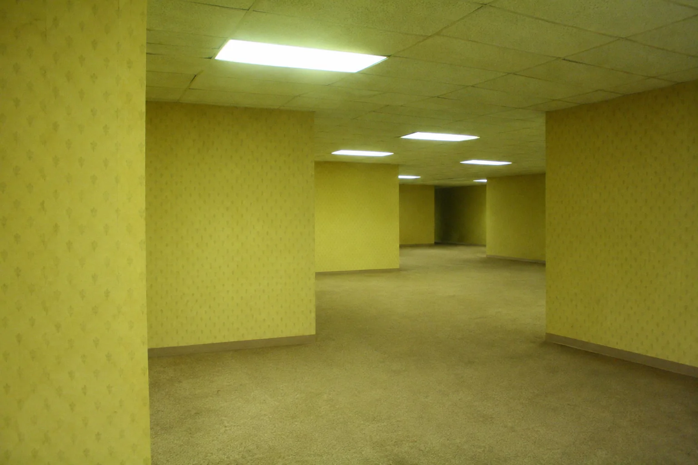

trash / structure / test
-001testroom.rsh

概要
室内空間生成の試験に用いられたと推測される場所。無人の部屋と廊下が続き、設備はごく普通に見える。
Lina-v3
この領域では、莉奈の試作品 Lina-v3 との遭遇が多い。探索者に帰りたいかを尋ね、扉の先へ案内することがある。案内の行き先は事例ごとに確認が必要。
未確認の異常
- 設計図と実際の扉の数が一致しない。
- 元の道を戻ると壁の材質が変わる。
- 窓の外に別の室内が見える。
- 数え直すたびに部屋の数が変わる。
-001 が発見順や危険度を表すとは限らない。アクセス
外界からの侵入
和温陣国の首都外で、建物の奥行きと室内の広さが合わなくなった場所に、黄色い壁紙の部屋が現れることがある。窓のない建物から蛍光灯の音が聞こえ、入る直前に外の音が途切れるのが兆候とされる。
扉を通った後に振り返ると、入口は廊下の壁へ置き換わっていることがある。同じ建物を再訪しても再現できるとは限らず、侵入地点の座標だけでは入口を特定できない。
領域間の移動
- -002sync-think-thinkへは、自分の声が二度返ってくる灰色の扉から移動する例がある。扉の先では黄色い壁紙が白い壁へ切り替わる。
- -003back-yardへは、下端から湿った土の匂いがする屋外扉が接続することがある。開いた先に芝生と曇り空が見える。
- 004WaonJinkoku-betaへは、和温陣国の街並みが見える扉が接続する場合がある。標識の文字の欠落や、建物とずれた影が目印となる。
帰還
入口の形が残っている間に引き返せば、侵入前の場所へ戻れる場合がある。一度壁へ変わった入口を、内側から開き直す方法は確認されていない。
Lina-v3は別の扉へ案内することがあるが、それが外界への帰還かは不明。扉の向こうが見慣れた場所でも、通過先を断定できない。